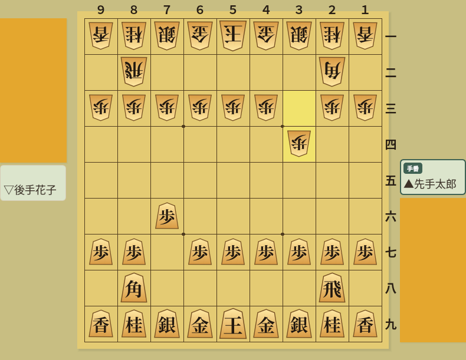

Use ShogiBoardQ from Claude, Cursor, VS Code, Gemini CLI and Codex CLI
ShogiBoardQ ships with a Model Context Protocol (MCP) server
MCP is a common protocol that lets AI clients (Claude Desktop, Claude Code, Cursor, GitHub Copilot in VS Code, Gemini CLI, Codex CLI and others) call external tools. Once you register the ShogiBoardQ server (shogiboardq-mcp), requests such as "convert this record to CSA", "analyse this position for 10 seconds" or "generate five mate-in-three puzzles" are carried out by the client through ShogiBoardQ's own functions.
These tools run shogiboardq-cli under the hood and do not need the window to be open.
| Tool | What it does |
|---|---|
| convert_kifu | Convert a record file or text to KIF, KI2, CSA, JKF, USI, USEN or a list of SFENs |
| validate_sfen | Validity of a SFEN, side to move, pieces in hand, check status, number of legal moves |
| list_engines | USI engines registered in ShogiBoardQ |
| analyze_position / analysis_status / analysis_result | Position analysis with a registered engine (MultiPV, job based) |
| search_mate / mate_status | Mate search with an engine that supports go mate (job based) |
| generate_tsume / tsume_generation_status / stop_tsume_generation | Automatic tsume shogi puzzle generation (job based) |
| verify_tsume | Uniqueness check (unique / multiple / nomate / wrong_length / unknown) |
| render_board_image | Render a SFEN as a PNG board image |

Output of render_board_image: the same piece images and colours as the GUI, with the last move highlighted
When ShogiBoardQ is started with --automation, these tools read and change what the window shows.
| Tool | What it does |
|---|---|
| get_app_state | State (idle, game, analysis, ...), current ply, record file, unsaved changes, open dialogs |
| get_position / set_position | SFEN and moves of the current position; set a position |
| load_kifu / save_kifu / get_kifu / goto_ply | Load, save and read the record (format and ply range selectable), move to a ply |
| list_actions / trigger_action | List and run menu actions (allow-list) |
| capture_screenshot | Save a PNG screenshot of the main window or a dialog |
| list_dialogs / close_dialog / get_widget_text | List open dialogs, close one, read labels, fields and tables |
Resources are provided for the current position (shogiboardq://position/current, SFEN), the current record (shogiboardq://kifu/current, KIF text) and the registered engines (shogiboardq://engines).
You need a built ShogiBoardQ and the Python mcp package
The server uses build/ShogiBoardQ (GUI) and build/shogiboardq-cli (command line, no GUI). The release packages do not include shogiboardq-cli yet, so build from source following the Linux, macOS or Windows build guide.
git clone --recurse-submodules https://github.com/hnakada123/ShogiBoardQ.git
cd ShogiBoardQ
cmake -B build -S . -G Ninja
cmake --build build
./build/shogiboardq-cli version # prints {"ok":true,"version":"..."}Python 3.10 or later and the official mcp package are required. The server lives in the mcp/ directory of the repository.
# install only the mcp package (the server is found through PYTHONPATH)
pip install mcp
# or install the server itself
pip install -e mcpAnalysis, mate search, puzzle generation and uniqueness checks refer to engines by the name registered under Settings → Engine Settings in ShogiBoardQ; arbitrary executable paths are not accepted. Mate search, generation and verification need an engine that supports go mate, such as KomoringHeights.
Pass these to the server from the client configuration. At least SHOGIBOARDQ_EXECUTABLE is needed.
| Variable | Meaning |
|---|---|
SHOGIBOARDQ_EXECUTABLE | Path of ShogiBoardQ. GUI tools launch it with --automation when no instance is running; shogiboardq-cli next to it is found automatically |
SHOGIBOARDQ_CLI | Path of shogiboardq-cli if it lives elsewhere |
SHOGIBOARDQ_ALLOWED_DIRS | Directories the tools may read and write (: separated on Linux/macOS, ; on Windows). Default: your home directory |
SHOGIBOARDQ_OUTPUT_DIR | Default folder for screenshots and other outputs. Default: shogiboardq-mcp under the temp directory |
SHOGIBOARDQ_AUTOMATION_SOCKET | Automation socket path (shared with the app's --automation-socket) |
SHOGIBOARDQ_QUIT_APP_ON_EXIT | Set to 1 to close an app the server launched when the server exits (default: keep it running) |
PYTHONPATH | The repository's mcp directory unless you ran pip install -e mcp |
Every client does the same thing: start python3 -m shogiboardq_mcp over stdio and pass the environment variables
The examples below are for Linux; replace /path/to/ShogiBoardQ with your checkout. On Windows use python instead of python3 and paths such as C:\\Users\\...\\ShogiBoardQ\\build\\ShogiBoardQ.exe. Restart the client (or reload its MCP servers) after editing the configuration.
Run the following inside your project (add --scope user to enable it in every project). Everything after -- is the server command.
claude mcp add shogiboardq \
--env SHOGIBOARDQ_EXECUTABLE=/path/to/ShogiBoardQ/build/ShogiBoardQ \
--env PYTHONPATH=/path/to/ShogiBoardQ/mcp \
-- python3 -m shogiboardq_mcp
claude mcp list # check the connectionAdd the server to claude_desktop_config.json, opened via Settings → Developer → Edit Config (macOS: ~/Library/Application Support/Claude/, Windows: %APPDATA%\Claude\).
{
"mcpServers": {
"shogiboardq": {
"command": "python3",
"args": ["-m", "shogiboardq_mcp"],
"env": {
"SHOGIBOARDQ_EXECUTABLE": "/path/to/ShogiBoardQ/build/ShogiBoardQ",
"PYTHONPATH": "/path/to/ShogiBoardQ/mcp"
}
}
}
}Write it to .cursor/mcp.json in the project, or ~/.cursor/mcp.json for all projects.
{
"mcpServers": {
"shogiboardq": {
"command": "python3",
"args": ["-m", "shogiboardq_mcp"],
"env": {
"SHOGIBOARDQ_EXECUTABLE": "/path/to/ShogiBoardQ/build/ShogiBoardQ",
"PYTHONPATH": "/path/to/ShogiBoardQ/mcp"
}
}
}
}Write it to .vscode/mcp.json in the workspace. VS Code uses servers as the top-level key. For a user-wide setup use the "MCP: Open User Configuration" command and the same format.
{
"servers": {
"shogiboardq": {
"type": "stdio",
"command": "python3",
"args": ["-m", "shogiboardq_mcp"],
"env": {
"SHOGIBOARDQ_EXECUTABLE": "/path/to/ShogiBoardQ/build/ShogiBoardQ",
"PYTHONPATH": "/path/to/ShogiBoardQ/mcp"
}
}
}
}Register it with the command below, or add it to mcpServers in ~/.gemini/settings.json (or the project's .gemini/settings.json).
gemini mcp add -s user \
-e SHOGIBOARDQ_EXECUTABLE=/path/to/ShogiBoardQ/build/ShogiBoardQ \
-e PYTHONPATH=/path/to/ShogiBoardQ/mcp \
shogiboardq python3 -m shogiboardq_mcp{
"mcpServers": {
"shogiboardq": {
"command": "python3",
"args": ["-m", "shogiboardq_mcp"],
"env": {
"SHOGIBOARDQ_EXECUTABLE": "/path/to/ShogiBoardQ/build/ShogiBoardQ",
"PYTHONPATH": "/path/to/ShogiBoardQ/mcp"
}
}
}
}Codex clients on the same host share ~/.codex/config.toml. Register the server with the command below, or add the configuration shown here. Use the Python interpreter where the mcp package is installed; for a virtual environment, replace python3 with its absolute path.
codex mcp add shogiboardq \
--env SHOGIBOARDQ_EXECUTABLE=/path/to/ShogiBoardQ/build/ShogiBoardQ \
--env PYTHONPATH=/path/to/ShogiBoardQ/mcp \
-- python3 -m shogiboardq_mcp[mcp_servers.shogiboardq]
command = "python3"
args = ["-m", "shogiboardq_mcp"]
startup_timeout_sec = 30
env_vars = ["DISPLAY", "WAYLAND_DISPLAY", "XDG_RUNTIME_DIR", "XAUTHORITY", "DBUS_SESSION_BUS_ADDRESS", "XDG_CONFIG_HOME"]
[mcp_servers.shogiboardq.env]
SHOGIBOARDQ_EXECUTABLE = "/path/to/ShogiBoardQ/build/ShogiBoardQ"
PYTHONPATH = "/path/to/ShogiBoardQ/mcp"To launch the GUI automatically on Linux, add the env_vars line to [mcp_servers.shogiboardq] even when registering with the command. This forwards the display and session environment and the settings directory. Edit the existing table instead of adding a duplicate.
Check the registration with codex mcp get shogiboardq, then restart Codex and start a new conversation. In the CLI, use /mcp to check the connection. Ask “Use ShogiBoardQ's validate_sfen to validate startpos”; a legal move count of 30 confirms that the tool works. codex mcp list only shows the registration.
To try app tools without a display, add QT_QPA_PLATFORM = "offscreen" under [mcp_servers.shogiboardq.env]. The window will not appear on screen in this mode. See the official OpenAI MCP documentation for configuration details.
Ask in plain language; the client picks the right tools
| Request | Tools used |
|---|---|
| "Convert ~/kifu/game.kif to CSA and save it as ~/kifu/game.csa" | convert_kifu |
| "Is this SFEN a legal position? Is the king in check?" | validate_sfen |
| "Analyse the position after 7g7f 3c3d from the initial position with YaneuraOu for 10 seconds, 3 candidate lines" | list_engines → analyze_position → analysis_result |
| "Check with KomoringHeights whether this position has a mate" | search_mate → mate_status |
| "Generate five mate-in-three puzzles with at most three attacking pieces" | generate_tsume → tsume_generation_status |
| "Verify that this mate-in-five has no cook" | verify_tsume |
| "Render this position to ~/Pictures/board.png" | render_board_image |
Analysis, mate search and puzzle generation return a job id immediately; the client polls the matching status tool (analysis_status and so on) for progress and results. This keeps every call short, so clients that cut tool calls off after about 60 seconds can still run analyses and generations that take minutes. Generation can be ended early with stop_tsume_generation; list_jobs and cancel_job manage all jobs.
Positions are SFEN strings (startpos for the initial position) and moves are USI (7g7f, drops as P*5e). Results contain both a readable summary and structured data (structuredContent). Record text and principal variations are limited by default and can be widened with max_chars and max_pv_moves.
A ShogiBoardQ started with --automation can be operated from the AI client
The automation API is off by default. Started with --automation, ShogiBoardQ accepts requests on a local socket that only your user can access and prints automation: listening on .... When SHOGIBOARDQ_EXECUTABLE is set, the server launches the app on the first GUI tool call (or connects to an instance that is already running).
./build/ShogiBoardQ --automation
# with an explicit socket location
./build/ShogiBoardQ --automation --automation-socket /tmp/shogiboardq.sock| Request | Tools used |
|---|---|
| "What position is shown right now?" | get_position |
| "Open ~/kifu/game.kif and go to move 30" | load_kifu → goto_ply |
| "Save the current record as KI2 to ~/kifu/out.ki2" | save_kifu |
| "Open the game analysis dialog, read it and take a screenshot" | trigger_action → list_dialogs → get_widget_text → capture_screenshot |
| "Flip the board" | trigger_action (actionFlipBoard) |
Loading a record or setting a position while the current record has unsaved changes is refused unless discard_unsaved is passed explicitly. Menu actions are allow-listed: quitting, overwriting the current file and language changes cannot be triggered. list_actions shows what is available.
Local only, off by default, explicit permission
--automation is givenSHOGIBOARDQ_ALLOWED_DIRS (default: your home directory). Existing files are replaced only with an explicit overwriteshogiboardq-cli; a source build is requiredDesign details (JSON-RPC methods, job states, tests) are in the developer documents docs/dev/mcp-server.md (Japanese) and mcp/README.md.